An important problem in applied nuclear physics is that of efficiently solving the neutron transport equation. In 5D (three spatial and two angular dimensions) this equation is given by
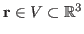
and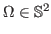
(the unit sphere in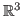
). Here: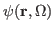
denotes the neutron flux, which is the density of neutrons passing through a unit space at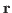
in direction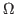
per unit time;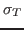
and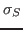
are constants which describe the different interactions a neutron can undergo; and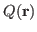
denotes the neutron source, and is a known non-fission source term, isotropic in angle, of neutrons from position . This equation is subject to suitable boundary conditions on the boundary of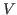
.Due to its high dimension, (1) results in huge linear systems when discretised, and we are interested in fast methods for solving these. In this talk we will look at one solution method in the context of a 2D model problem, with one spatial dimension,
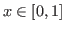
, and one angular dimension,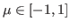
. Under this restriction the transport equation is given by
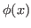
is called the scalar flux and is defined as
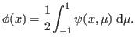 |
(3) |
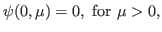 |
|
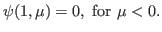 |
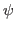
(with the right hand side of (2) formed from the previous value of ) is known as source iteration. This suffers potentially very slow convergence when the ratio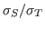
is close to 1, a situation often referred to as working within a diffusive regime. Using an asymptotic analysis of (2) and its solution, it is well known that a specific diffusion equation can be derived, given by
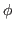
as described by Habetler & Matkowsky [G. Habetler & B. Matkowsky, 75] and later Jin & Levermore [S. Jin & D. Levermore, 91]. This approximation can be used to accelerate source iteration using ideas first proposed by Kopp [H.J. Kopp, 1963], leading to a scheme known as diffusion synthetic acceleration (DSA). Using (4), DSA can be defined as in [E. Larsen, 1984] as an accelerated `2-step' iterative process. Faber & Manteuffel [V. Faber & T.A. Manteuffel, 1988] showed that this `2-step' DSA is equivalent to a preconditioned fixed-point iterative scheme.In this talk we use the asymptotic approach to derive an explicit convergence rate (in terms of an asymptotic expansion coefficient) for the preconditioned source iteration of Faber & Manteuffel. This provides a simple way to analyse the `2-step' DSA method, reinforcing the analysis of Faber & Manteuffel. Next we use the asymptotic approach to look at the convergence of preconditioned Krylov methods. Numerical results will be given to support our analysis.